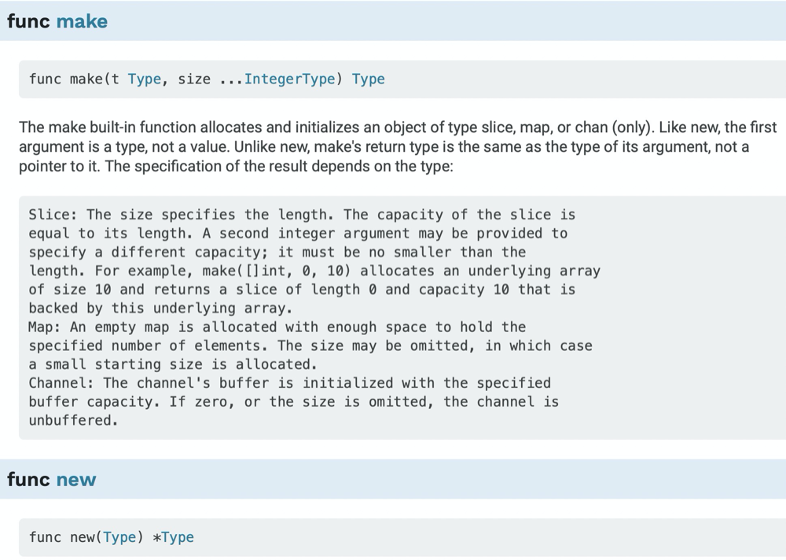

前言
最近刚用Go完成了一个web项目，通过项目算是又重新认识了Go。其中首当其冲就是各种数据结构的初始化，之前一直使用Python作为主语言，Python中一切皆为对象，正常情况下直接赋值就可以完成初始化了。但是在Go中一切却似乎变得没有那么简单，其中的一些概念你需要去理解。比如什么时候使用new、make,什么时候用:=、var；比如零值在Go又是什么意思等等。说实话，作为动态语言入门的我，为了搞清楚这些确实花费了一些时间，所以特此来记录，方便你我他，😁（内容多节选自 Go圣经）。
基本概念
零值
零值，不是指0，这是抽象的概念。在Go中，不同的类型有不同的零值。
|类型|零值|
|:—|:—|
|数值|0|
|布尔值|false|
|字符串|””|
|接口、引用类型|nil|
|数组或结构体|组成元素、字段的对应的零值|
在我看来，可以把零值理解成一种默认值。
声明方法
Go中主要有四种声明语句：var,const,type,func分别对应了变量，常量，类型和函数。
数据类型
Go语言将数据类型分为四类：基础类型、复合类型、引用类型和接口类型。引用类型包括指针、切片、字典、通道、函数，这些其实都是对程序中的变量或者是状态的引用。其他类型暂时不做介绍。
初始化
变量初始化
变量的初始化一般有三种方式：1
2
31、 var varName varType
2、 var varName varType = varValue
3、 varName := varValue
第一种方法会用变量的零值初始化变量；第二种方法就是正常赋值初始化；第三种方法会自动推导变量类型最后赋值初始化。发现Go真的大道至简，你可以省略变量类型，也可以省略初始值。同时也可以发现，在Go中不存在没有被初始化的变量。
make&&new
最近太懒了，直接引用了官文了
